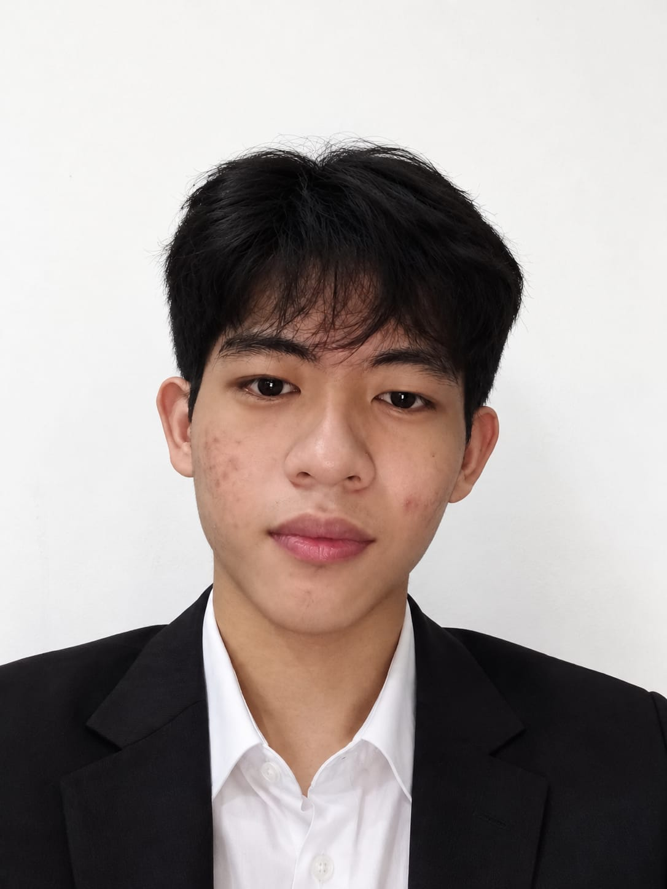
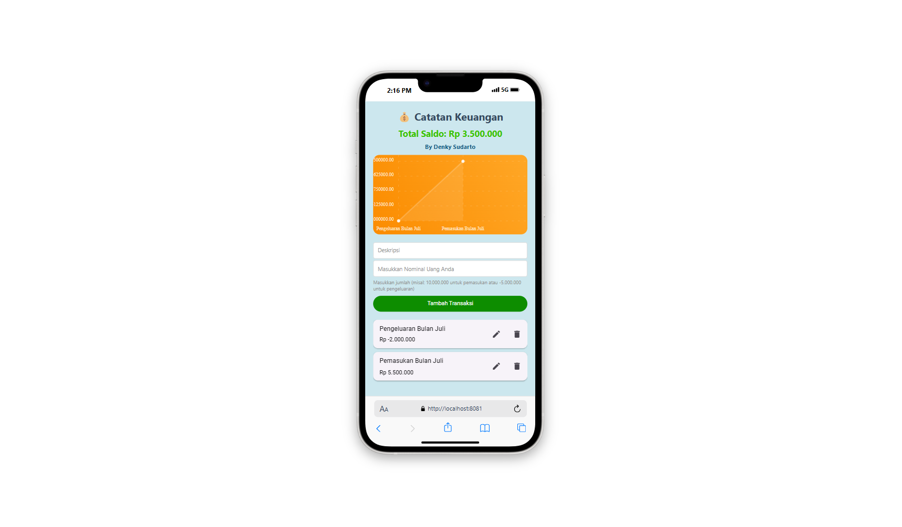
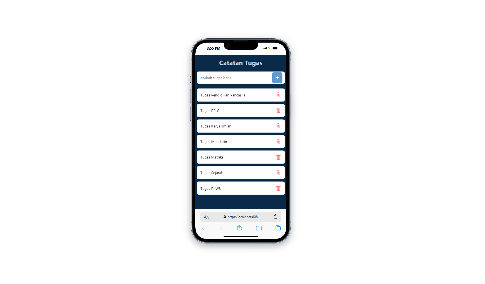
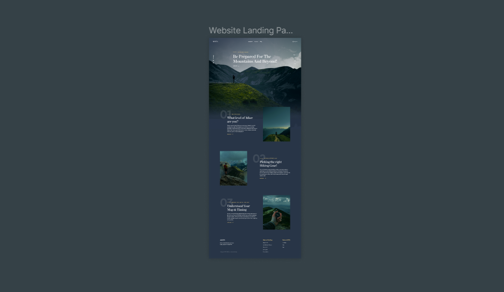

Tentang proyek
Dashboard ini dirancang untuk memudahkan akses ke data pengguna, pemasok, stok, barang masuk, barang keluar, dan peminjaman barang. Catatan teknologi pada versi sebelumnya mencakup Laravel, Tailwind CSS, dan Vue.js.

Denky Sudarto
Berfokus pada frontend, desain antarmuka, dan solusi digital yang berguna.
Design & code by Denky
Saya tertarik pada perpaduan antara desain, teknologi, dan pemecahan masalah.
Mari berdiskusi ↗Halo, saya Denky — mahasiswa Teknik Informatika yang berfokus pada frontend development dan UI/UX design. Saya senang mengubah kebutuhan pengguna menjadi antarmuka yang fungsional, responsif, dan nyaman digunakan.
Saya terus mengembangkan kemampuan dalam membangun website, mengintegrasikan layanan, serta menyusun pengalaman pengguna yang sederhana dan terstruktur.
Beberapa eksplorasi website dan aplikasi. Pilih proyek untuk melihat detail atau membuka demo yang tersedia.
Dashboard ini dirancang untuk memudahkan akses ke data pengguna, pemasok, stok, barang masuk, barang keluar, dan peminjaman barang. Catatan teknologi pada versi sebelumnya mencakup Laravel, Tailwind CSS, dan Vue.js.


Antarmuka aplikasi keuangan personal untuk melihat saldo, tren pemasukan dan pengeluaran, serta daftar transaksi. Deskripsi awal menyebut React Native.

Aplikasi tugas dengan daftar item, input untuk menambah tugas, serta aksi hapus pada setiap item. Deskripsi awal menyebut React Native.

Konsep desain aplikasi absensi dengan alur login, verifikasi email, absensi online, absensi dari rumah, dan pengajuan izin. Deskripsi awal menyebut Figma.

Landing page produk yang menampilkan gambar perangkat, pengenalan produk, dan navigasi menuju informasi tambahan. Tautan demo belum dicantumkan pada materi sumber.
Pengalaman kerja dan pendidikan yang membentuk proses belajar saya di bidang teknologi.
Mengambil dan mengantarkan paket sesuai area pengiriman serta memperbarui status pengiriman melalui aplikasi.
Mengembangkan aplikasi internal untuk membantu UMKM mengelola proses kerja dan menerjemahkan kebutuhan pengguna menjadi fitur antarmuka.
Mengembangkan landing page dan company profile menggunakan React.js dan Tailwind CSS serta menyesuaikan tampilan dengan kebutuhan klien.
Menempuh pendidikan di bidang Teknik Informatika dengan fokus pada teknologi, pemrograman, dan pengembangan aplikasi.
Mempelajari pemrograman, pengembangan website dan aplikasi, serta dasar-dasar UI/UX.
Terbuka untuk kesempatan kerja, kolaborasi, dan diskusi seputar frontend development maupun UI/UX design.
Kirim email ↗